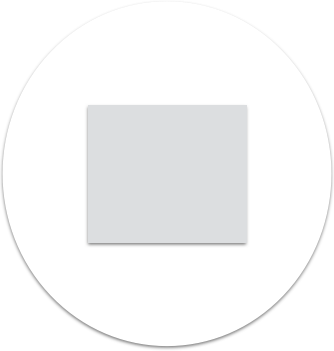
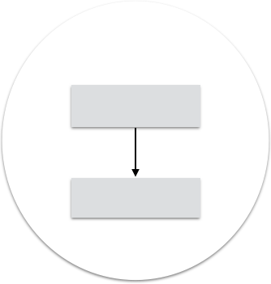
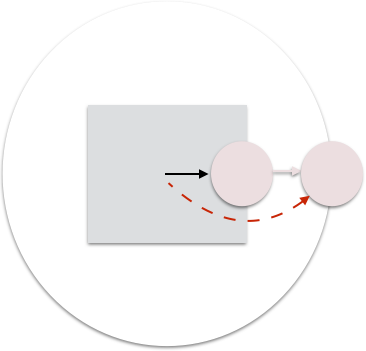
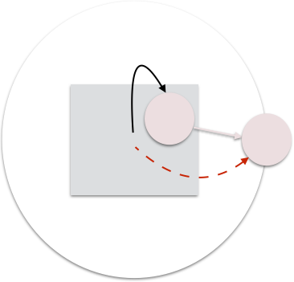
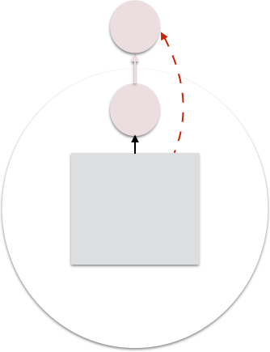
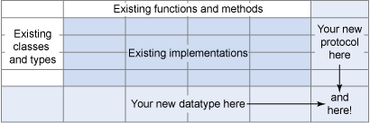

New classes for same behaviors through extends

Objects:
Don't do things to my data, ask me to do things.
Law of demeter
Principle of Least Surprise
Law of demeter:
Tell a dog to walk:
Don't tell the dog's legs to walk.
Tell the dog.
A method may only call things in direct scope
So let's say this circle represents an object with a method
It can call a method of it's own class
this.draw()
Or methods of objects injected in
graphics.draw()
Or methods of objects it made
local = new Gif() local.draw()
Or methods of objects in it's class
this.helper.draw()
If you can do it anyway, why am I doing it for you?
Law of demeter is about behavior of objects
Here, person is just data
just an immutable data-structure
Bad: Getting data from objects.
public class View {
public void paint() {
if (personPainter
.getPerson().hair().equals("brown") {
// Vary paint style
}"Object Oriented" programming
in contrast with "functional" programming
New classes for same behaviors through extends
public class PersonPainter implements Drawable {
public void draw(Graphics g) {
...
}
public void drawOutline(Graphics g) {
...

Could pull "Painting" behavior into single class:
But then, the only way to extend types is to add to every behavior
public class Painter {
public drawOutline(Object o) {
if (o instanceof Person) {
...
} ...There are solutions
Clojure Protocols
PersonPainter, who paints the person: Object
Person, who is painted by a painter: data
AVOID mixing concepts:
public class PersonPainter implements Drawable {
public void draw(Graphics g) {
...
}
public Color getHair() {So that's Object Orientation